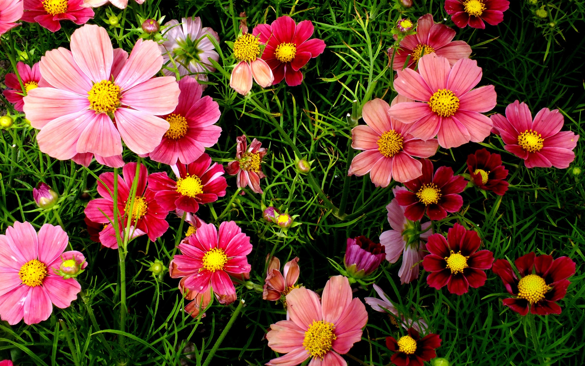

Son aquellas plantas florales vasculares con semillas donde sus flores presentan verticilos, sépalos, pétalos, estambres, carpelos y con semilla vestida haciendo referencia a la presencia de frutos. La mayoría de las plantas, como el Peral o el Manzano tienen flores, y se reproducen por semillas. Las flores de estas plantas tienen una parte masculina y otra parte femenina. Hay dos tipos de planta con flor: las gimnospemas y angiospermas.
Las Gimnospermas son plantas vasculares que se reproducen mediante semillas “desnudas” pues, no se encuentran dentro de un fruto o tejidos protectores, a diferencia de las Angiospermas. Su nombre proviene de las palabras griegas gymons (desnudo) y sperma (semilla). No obstante, muchas Gimnospermas encierran sus semillas en una cubierta que tiene apariencia carnosa o papirácea. Las semillas se forman en la superficie de las hojas modificadas de los conos.En las Gimnospermas las flores se originaron a partir de los esporófilos y ramas adyacentes que evolucionaron hasta convertirse en escamas organizadas en conos, principalmente.
Las semillas de las Angiospermas su nombre proviene del griego angion (recipiente) y esperma (semilla) están dentro de un “recipiente”: el ovario, que es una hoja especializada llamada carpelo. El ovario da origen al fruto cuando ha madurado y los óvulos han sido fecundados. Por tanto, el embrión se encuentra mucho más protegido contra las enfermedades, desecación y herbívoros que el embrión de las Gimnospermas, gracias a la presencia de los tejidos envolventes del fruto.En las Angiospermas la evolución de la flor ocurrió de manera distinta en estructura y organización. Los esporófilos que portan esporas masculinas (polen) son denominados estambres y los esporófilos con esporas femeninas (óvulos) son nombrados carpelos; a la vez, existen hojas estériles asociadas a los esporófilos llamadas sépalos y pétalos.
Los métodos más comunes de reproducción son a través de la siembra de semillas y por esquejes. Pero también hay otros métodos de reproducción como la división de matas, los acodos y estolones.Echa un vistazo al siguiente video si deseas saber más.